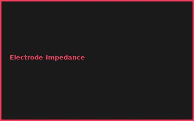
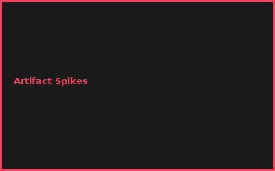
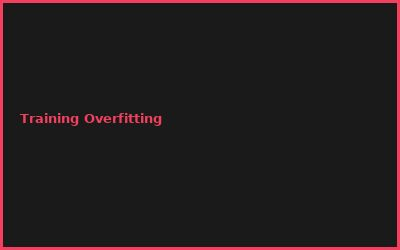
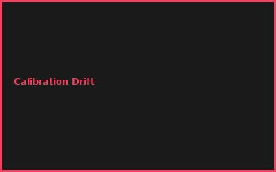

Kapitel 1: EEG Basics & Signal Acquisition
- EEG Electrode Types (Dry, Wet)
- Signal Conditioning & Amplification
- 24-bit ADC Digitization
- Noise Filtering (60Hz Notch)
Kapitel 2: Signal Processing
# EEG Signal Analysis
# Wavelet decomposition + ML
signal_mne = mne.io.read_raw_brainvision()
signal_mne.notch_filter(60) # Remove powerline
signal_mne.filter(0.5, 40) # Bandpass
Kapitel 3: Feature Extraction
- Band Power (Alpha, Beta, Theta)
- CSP (Common Spatial Patterns)
- Temporal & Spectral Features
- Dimensionality Reduction (PCA)
Kapitel 4: Classification Algorithms
- LDA for Real-time Decoding
- Deep Learning (CNN for EEG)
- Motor Imagery vs. P300 Paradigms
- Transfer Learning
Kapitel 5: Application Control
- Cursor Movement (2D/3D)
- Speller Interfaces
- Prosthetic Limb Control
- Real-time Feedback Systems
Kapitel 6: Medical & Ethical Framework
- IRB Approval Process
- Subject Safety Monitoring
- Privacy & Data Protection
- Commercial vs. Research Ethics
💡 PRO-TIPPS
🎯 Tipp: Motor Imagery einfacher als P300
Problem: P300 = wenig Signal | Lösung: Motor Imagery = robust, intuitiv
💰 BUDGET-HACKS (98% SPAREN!)
💰 Hack: OpenBCI Board DIY
Original: Medical EEG System: €50K+ | Hack: OpenBCI + DIY Electrodes: €500 | Einsparnis: 99%
⚠️ FEHLER
❌ Fehler: Artifact Contamination
Was passiert: Eye blinks = falsche Decoding | ✅ Lösung: ICA Component Removal
🌐 COMMUNITY
BCI Society, OpenBCI Community, MNE Forum, IEEE Brain Initiative
📸 Fehler-Galerie



